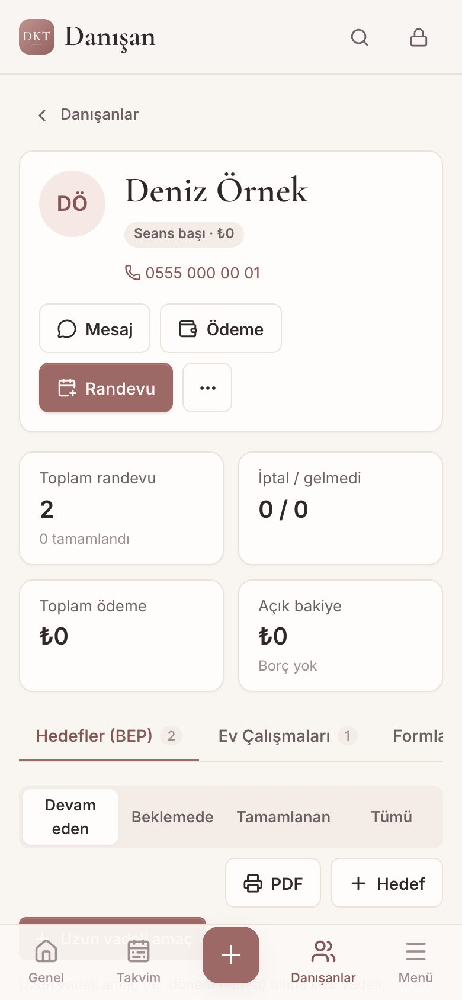
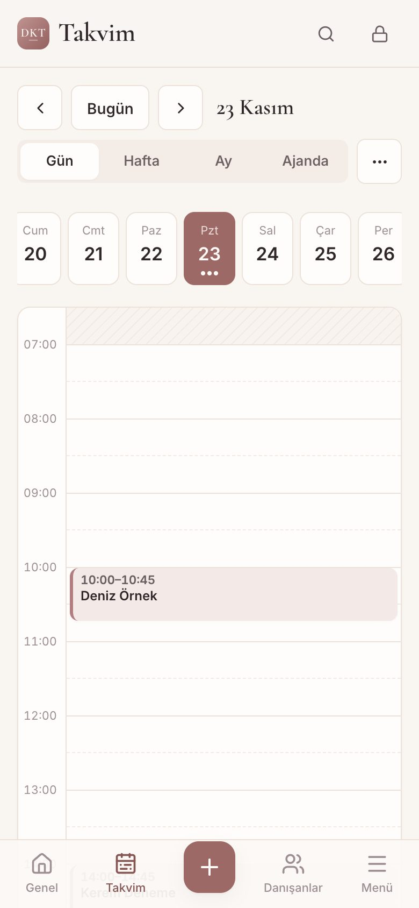
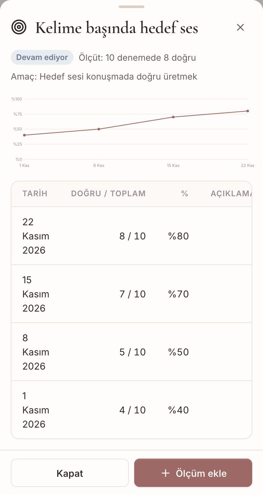
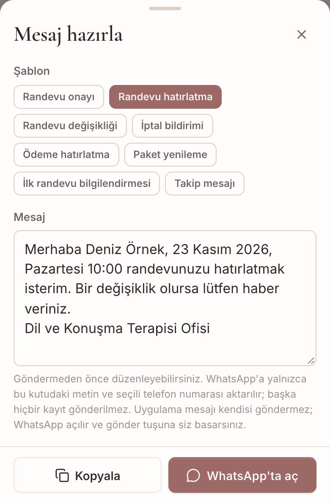

📌 Hep ana ekrandaki DKT Ofis simgesinden açın. Telefon ve bilgisayar kayıtları ayrıdır (aktarma: Yedek bölümü).
2 · Günlük iş ve ödemeler
👤 Danışanlar
📍 Danışanlar → Yeni danışan
Ad soyad yeterli; telefon WhatsApp mesajları içindir.
Düzenle: danışan dosyası → ⋯ → Bilgileri düzenle
Gelmeyen danışan: ⋯ → Arşivle (hiçbir kayıt silinmez).

🗂️ Danışan dosyası
Danışanın adına dokunun. Sekmeler: Genel Bakış, Randevular, Seans Notları, Hedefler (BEP), Ev Çalışmaları, Formlar, Belgeler, Zaman Çizelgesi, Ödemeler, Paketler.
💡 Zaman Çizelgesi seans, not, ölçüm, ödev ve ödemeyi tarih sırasıyla tek listede gösterir.

📅 Takvim ve randevu
📍 Takvim · + Yeni → Randevu
Oluştur: boş saate dokunun, danışanı ve saati seçin. Tekrar için Tekrar bölümü.
⚠️ “Ses cihazda işlenir” yazmıyorsa ses, metne çevrilmek için Apple / Google / Microsoft'a gidebilir; ilk kullanımda sorulur. Danışan adı ve tanı söylemeyin. Uygulama ses kaydı saklamaz.

🎯 BEP ve gelişim takibi
📍 Danışan → Hedefler (BEP)
Uzun vadeli amaç → altına Bu amaca hedef ekle + ölçüt.
Ölçüm: doğru / toplam deneme → yüzde kendiliğinden hesaplanır.
Gelişim: grafik ve tüm ölçümler. Durum: devam ediyor · beklemede · tamamlandı.
💡 Ölçümü seans notunun içinden de girebilirsiniz.
🏠 Ev çalışmaları
📍 Danışan → Ev Çalışmaları → Ev çalışması
Başlık, açıklama, son tarih; isterseniz ilgili hedef.
Sonraki seansta Tamamlandı / Tamamlanmadı. Süresi geçen: Gecikti.
Geçmiş: Tümü (geçmiş dahil)
📋 Kendi değerlendirme formlarınız: Not ve Form Şablonları → danışanda Formlar.
4 · İletişim, hatırlatma, rapor ve yedek

💬 WhatsApp mesajı
📍 Randevu → Hatırlat · Danışan → Mesaj
Şablonu seçin, metni düzeltin.
WhatsApp'ta aç → WhatsApp yazılı açılır.
Gönder tuşuna siz basarsınız.
⚠️ Otomatik gönderim yoktur. Mesaja tanı veya seans notu yazmayın.
🔔 Hatırlatma ve bildirim
Danışana
Randevu formunda Danışana hatırlatma (WhatsApp); zamanı gelenler Genel Bakış'ta listelenir, siz gönderirsiniz.
Size
Ayarlar → Bildirimler: zaman seçin (ör. 1 gün, 2 saat önce) → Cihaz bildirimlerine izin ver
📌 Bildirimler uygulama açıkken gelir. Kapalıyken hatırlatma için Önümüzdeki 60 günü telefon takvimine aktar; randevu değişirse yeniden aktarın.
📄 PDF, CSV ve belgeler
PDF: seans notunda PDF · Seans Notları / Hedefler'de PDF · danışan ⋯ → Danışan dosyası (PDF) · Raporlar → Gelir-gider PDF
Açılan sayfada PDF olarak kaydet / yazdır → PDF olarak kaydet.
CSV: Yedekleme → CSV olarak dışa aktar.
Belge / fotoğraf: danışan → Belgeler → Dosya ekle (en fazla 10 MB).
Geri yükle / başka cihaza taşı: önce o cihazda yedek alın → Yedek dosyası seç → Tamamen değiştir veya Birleştir.
💡 Bir kez açıldıktan sonra internetsiz çalışır (WhatsApp hariç).
🔒 Gizlilik ve güvenlik
Kayıtlar yalnızca bu cihazda, şifreli durur; sunucuya veya yapay zekâya gönderilmez. Uygulama kameraya, konuma, rehbere erişmez; mikrofonu yalnızca Konuşarak yaz'a basınca kullanır.
Şifreli kullanım ve ekran kilidi önerilir; şifre + kurtarma kodu birlikte kaybolursa yalnızca yedek kurtarır. Gerçek veriden önce KVKK için hukuki görüş alın.